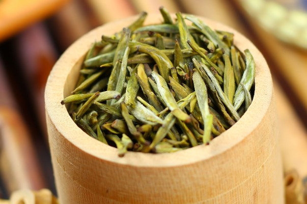
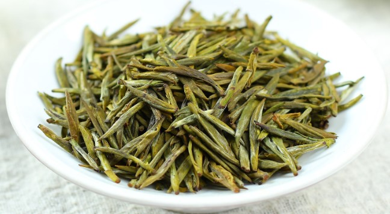
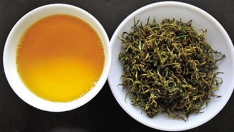
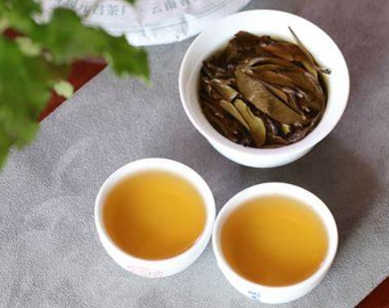
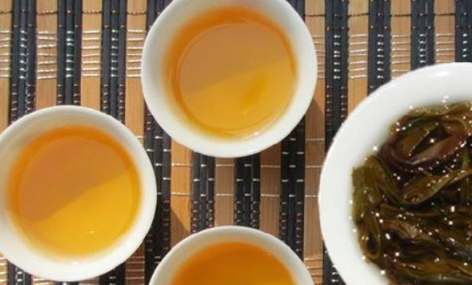

雅安黄茶
蒙顶山是世界茶源，蒙顶山黄芽是中国黄茶的代表，雅安黄茶因原料不同分为黄芽茶（蒙顶山黄芽）、黄小茶、黄大茶。
概述
黄茶是六大茶类之一且我国独有的茶类，历史悠久，因加工过程中的“闷黄”作用，成茶汤色、叶底黄亮而得名，其基本品质特征还包括甜香明显，滋味醇爽回甘等。主要出产于四川、湖南、湖北、安徽、浙江和广东等省，因加工原料不同分为黄芽茶、黄小茶、黄大茶。现代工艺的黄茶由绿茶加工发展而来，基本工艺为杀青—闷黄—干燥，不同黄茶闷黄条件不同。
尽管我国黄茶产地多，但由于其工艺复杂，茶叶品质不稳定，生产效率低，统计显示，2013全国黄茶总产量仅179吨，仅为全国茶叶总产量的0.01%，远远不能满足市场需求。蒙顶山是世界茶源，蒙顶山黄芽是中国黄茶的代表，雅安黄茶因原料不同分为黄芽茶（蒙顶山黄芽）、黄小茶、黄大茶。
历史沿革
“黄芽”名称最早来源有借名之意，道家烧丹以铅华为黄芽，铅外黑内怀金华，金华即黄芽，乃铅之精英也。故茶之黄芽，取义茶之精华也。而“黄芽”一词最早为茶名见于唐敬宗年间李肇《国史补》“寿州有霍山之黄芽，蕲州有蕲门团黄”。但彼时“黄芽”是指茶树品种，以自然发黄的茶芽蒸制为的团茶。
关于饼茶制作，陆羽《茶经》记载“若茶之至嫩者，蒸罢热捣，叶烂而芽笋存焉”。“蒸罢热捣”四字道出当时蒸青后的茶叶根本不降温干燥。“如同无意之中添加了在现代被称为“闷黄”的工序，使茶、茶汤发黄”。南宋赵汝砺《北苑别录》有关于宋代饼茶加工的记载也表明，饼茶在蒸青后加水研磨，随后干燥，经历反复入火，过水的湿热环境，稍有不慎，茶色发黑。
再者从品饮方面来看，陆羽《茶经 五之煮》有品茶前，将干茶“持以逼火，屡其翻正”的记载，“在唐代的干燥技术与贮藏条件下，饼茶含水量很高。饮用之前，如没有烤茶的手续，则很难将饼茶碾碎成末，也很难保持茶的香味”。成都考古研究所根据宋代出土茶具认为宋代的茶叶主要是发酵茶。
由此可知，无论是茶叶蒸青后趁热捣碎，还是加水研磨，并反复焙火等，均无疑促使茶叶中多酚类物质氧化，茶色发黄，滋味醇化，只是古人无现代生物化学意义上“黄茶”的概念，多从外形上定名蒙山茶，其中蒙顶石花是最早（825年左右）有确切记载的，最富盛名的蒙山茶名品，可视为如今蒙顶黄芽的肇始。且就蒙顶山而言，黄茶发展早于绿茶。
到了明清，散茶逐渐流行，炒青绿茶工艺日渐成熟，人们开始认识到加工及存放不当产生黄变对绿茶品质的影响，张源《茶录》提到炒制过程“久延则过熟，速起却还生，熟则犯黄，生则著黑”。闻龙《茶笺》有“散所炒茶于筛上，阖户而焙。上面不可覆盖，以茶叶尚润，一覆则气闷罨黄”，又“松萝法”“须一人从旁扇之，以祛热气，否则色黄，香味俱减”。
随着人们不断认识与实践，最终发现黄变的“绿茶”有独特的滋味，加之绿茶长途运输进贡过程难免吸湿变质，进而探索发展了“闷黄”工艺，开始形成具现代意义的工艺黄茶，并以其工艺制作“仙茶”入贡。
明代李时珍《本草纲目》中记载“真茶性冷，唯雅州蒙山出者，温而祛疾”。可知当时蒙山确有茶经轻微发酵。清代名山知县赵懿《蒙顶茶说》“每芽仅拣一叶，先火而焙之。焙用新火燃猛火，以纸裹叶熨釜中，侯半焉，出而揉之……所揉均摊于纸上，绷于釜口烘令干，又精拣其圆润完洁者为正片贡茶。茶经焙，稍粗则叶背焦黄，稍嫩则黯黑……”，中文工艺可见现代黄茶“闷黄”雏形，一用纸包好后，用竹叶包好放到釜中；二闷烘，放到釜中，绷紧釜口，再烘干。
然而，黄茶制作程序繁复，成本高昂，主要供应皇室，不适合平民饮用，故百姓多只闻其名，未见其形，也是后来蒙顶黄芽技术失传的原因。
中华人民共和国成立后，国家先后建立了蒙山茶厂，茶树良种繁育场等茶叶生产发展企业，1958年，梁伯希等指导恢复蒙山传统名茶，1962——1965年间，杨天炯等结合现代技术，将蒙顶黄芽定为黄茶类，并系统总结了其制作工艺。
地理环境
四川地区是茶树的原产地之一，也是我国最早茶叶市场的形成地，蒙山作为四川产茶的中心，有我国最早人工植茶的文字纪载，被誉为“世界茶源”。
蒙山位于北纬30°地带，海拔948-1551米，因“雨雾蒙沫”得名，古代蒙山地跨雅、邛、名、芦四县；唐时起，“蒙顶”特指贡茶产地，在今四川省雅安市名山区蒙顶山，其山有上清、菱角、井泉、甘露、玉女五顶，形如莲花五瓣，最高上清峰，海拔1456米。
蒙山茶区常年云雾缭绕，空气湿度大，年平均气温13.4℃，年降雨量2000-2200mm，雨季达半年之久，有“西蜀漏天”之称。 土壤肥厚，棕、黄壤土居多，PH4.5-6，富含有机质，渗透、储水性好，适宜植茶。
品质特征
雅安黄茶干茶色泽黄绿，汤色黄绿明亮，香气甜香带花香，滋味甜醇，叶底黄绿明亮。
冲泡方法
1取雅安黄茶3-4g，投入玻璃杯或盖碗中
2以茶水比1:50，80-90℃水温冲泡
3 30秒左右饮用即可。
雅安黄茶茶汤可溶性糖类、氨基酸，水浸出物含量较高，多酚类、咖啡碱含量也相对较高，茶汤滋味协调，表现为醇爽回甘，带甜香，汤色明亮。
对于雅安黄茶而言，冲泡时间越长，香气略有下降，且温度越高，随冲泡时间延长茶汤汤色、滋味下降趋势越明显。而水温的较低时，香气、汤色较好，但滋味稍显淡薄。